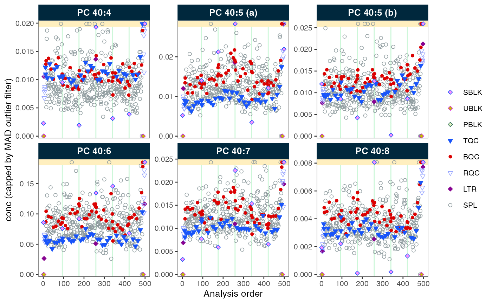

A basic MiDAR workflow
Source:vignettes/articles/T02_settingup_workflow.Rmd
T02_settingup_workflow.RmdThis tutorial outlines some key steps in a MiDAR workflow, based on a lipidomics dataset. See the tutorial Lipidomics Data Processing for a more detailed example.
Keep in mind that these examples below are simplified and may not be applicable to your data and experimental setup. Please consult other tutorials and recipes for information on other workflows and data types.
Setting up a RStudio project
To start a new MiDAR data analysis, creating a RStudio project is
recommended. (See Using
RStudio Projects). This will help to keep the data analysis
organized and makes it easier to share with others. The project should
contain the following subfolders: data and
output. Add data and metadata files to the
data folder.
Notebooks such as R/Notebook (.rmd) or Quarto Notebook (.qmd) are good choices to create documented data processing workflows. These formats allow combining code with formatted text to document the data processing steps.
Start with a new notebook or R script and load the midar
package
Creating a MidarExperiment object
The MidarExperiment object is the main data
container used in the MiDAR workflow. See (The
MidarExperiment data
object)[articles/03_midarexperiment.html] for more information.
We start by creating a new MidarExperiment object
(myexp), which will be used in all subsequent steps.
myexp <- MidarExperiment()Importing analysis results
As introduced in Preparing and
importing data
we first import the analytical data, in this case from MRMkit file. This file also
contains some metadata, such as qc_type and
batch_id (see Data
Identifiers in MiDAR) which we will import as well.
myexp <- import_data_mrmkit(data = myexp,
path = "datasets/sPerfect_MRMkit.tsv",
import_metadata = TRUE)
#> ✔ Imported 499 analyses with 503 features
#> ℹ `feature_area` selected as default feature intensity. Modify with `set_intensity_var()`.
#> ✔ Analysis metadata associated with 499 analyses.
#> ✔ Feature metadata associated with 503 features.Adding metadata
The subsequent processing steps require additional infomation that is
not available from the imported analysis data. This includes information
such as which internal standards are used to normalize, their
concentrations and the sample amounts analysed. These metadata can be
imported from separate files or R data frames as described in Preparing and importing data. To
keep the code concience in this example, we will import metadata from an
MSOrganizer template. The validation checks result in some warnings,
which will by default result in a failed metadata import. However,
assuming we understand what we are doing, we decided to ignore these
warnings by setting ignore_warnings = TRUE. They will still
be shown in the table printed in the console, labelled with an asterix
(*) in the status column.
myexp <- import_metadata_msorganizer(
myexp,
path = "datasets/sPerfect_Metadata.xlsm",
ignore_warnings = TRUE
)
#> ! Metadata has following warnings and notifications:
#> --------------------------------------------------------------------------------------------
#> Type Table Column Issue Count
#> 1 W* Analyses analysis_id Analyses not in analysis data 15
#> 2 W* Features feature_id Feature(s) not in analysis data 4
#> 3 W* Features feature_id Feature(s) without metadata 1
#> 4 W* ISTDs quant_istd_feature_id Internal standard(s) not used 1
#> --------------------------------------------------------------------------------------------
#> E = Error, W = Warning, W* = Supressed Warning, N = Note
#> --------------------------------------------------------------------------------------------
#> ✔ Analysis metadata associated with 499 analyses.
#> ✔ Feature metadata associated with 502 features.
#> ✔ Internal Standard metadata associated with 17 ISTDs.
#> ✔ Response curve metadata associated with 12 annotated analyses.Applying Data Processing
Now we are ready to proceed with data processing. In this example we will employ some basic data processing steps, whereby the corresponding code should be self explanatory. At the end of this code block we also set criteria based on which features are filtered on demand later in the workflow.
myexp <- normalize_by_istd(myexp)
#> ! Interfering features defined in metadata, but no correction was applied. Use `correct_interferences()` to correct.
#> ✔ 460 features normalized with 17 ISTDs in 499 analyses.
myexp <- quantify_by_istd(myexp)
#> ✔ 460 feature concentrations calculated based on 42 ISTDs and sample amounts of 499 analyses.
#> ℹ Concentrations are given in μmol/L.
myexp <- correct_drift_gaussiankernel(
data = myexp,
variable = "conc",
ref_qc_types = c("SPL"))
#> ℹ Applying `conc` drift correction...
#> ℹ 2 feature(s) contain one or more zero or negative `conc` values. Verify your data or use `log_transform_internal = FALSE`.
#> | | | 0% | |= | 2% | |== | 4% | |=== | 6% | |==== | 8% | |==== | 10% | |===== | 12% | |====== | 14% | |======= | 16% | |======== | 18% | |========= | 20% | |========== | 22% | |=========== | 24% | |============ | 26% | |============ | 28% | |============= | 30% | |============== | 32% | |=============== | 34% | |================ | 37% | |================= | 39% | |================== | 41% | |=================== | 43% | |==================== | 45% | |===================== | 47% | |===================== | 49% | |====================== | 51% | |======================= | 53% | |======================== | 55% | |========================= | 57% | |========================== | 59% | |=========================== | 61% | |============================ | 63% | |============================= | 65% | |============================= | 67% | |============================== | 69% | |=============================== | 71% | |================================ | 73% | |================================= | 75% | |================================== | 77% | |=================================== | 79% | |==================================== | 81% | |===================================== | 83% | |===================================== | 85% | |====================================== | 87% | |======================================= | 89% | |======================================== | 91% | |========================================= | 93% | |========================================== | 95% | |=========================================== | 97% | |============================================| 99% | |============================================| 100% - trend smoothing done!
#> ! 1 features showed no variation in the study sample's original values across analyses.
#> ! 1 features have invalid values after smoothing. NA will be be returned for all values of these faetures. Set `use_original_if_fail = FALSE to return orginal values..
#> ✔ Drift correction was applied to 459 of 460 features (batch-wise).
#> ℹ The median CV change of all features in study samples was -0.56% (range: -10.22% to 2.49%). The median absolute CV of all features across batches decreased from 38.96% to 38.56%.
myexp <- midar::correct_batch_centering(
myexp,
variable = "conc",
ref_qc_types = "SPL")
#> ℹ Adding batch correction on top of `conc` drift-correction.
#> ✔ Batch median-centering of 6 batches was applied to drift-corrected concentrations of all 460 features.
#> ℹ The median CV change of all features in study samples was -0.50% (range: -27.90% to 10.30%). The median absolute CV of all features decreased from 39.89% to 39.46%.
myexp <- filter_features_qc(
data = myexp,
include_qualifier = FALSE,
include_istd = FALSE,
min.signalblank.median.spl.sblk = 10,
max.cv.conc.bqc = 25)
#> Calculating feature QC metrics - please wait...
#> ✔ New feature QC filters were defined: 182 of 423 quantifier features meet QC criteria (not including the 25 quantifier ISTD features).Plotting data
MiDAR provides various plot function that can be useful in understanding analytical performance, trends and isses in the data. Plots are also available to inspect the effect of data processing (e.g. drift/bath-effect correction) and QC-based feature filtering.
Below we create a runscatter plot to visualize the
concentration of specific features across the analytical series in
different QC sample types. The plot can also be saved to a PDF file.
plot_runscatter(
data = myexp,
variable = "conc",
include_feature_filter = "PC 4",
include_istd = FALSE,
cap_outliers = TRUE,
log_scale = FALSE,
output_pdf = FALSE,
path = "./output/runscatter_PC408_beforecorr.pdf",
cols_page = 3, rows_page = 2,
)
#> Generating plots (1 page)...
#> - done!Exporting and sharing data
Finally, we can export specific datasets as plain csv tables, create
a detailed data report, and share the entire
MidarExperiment object with someone else without any code,
who can run own data processing, plots and QC checks.
# Saves a detailed report in Excel format with multiple sheets
midar::save_report_xlsx(myexp, path = "./output/myexp-midar_report.xlsx")
#> Saving report to disk - please wait...
#> ✔ The data processing report has been saved to './output/myexp-midar_report.xlsx'.
# Saves flat csv table with concentration values that passed the previously set
# QC criteria, for each feature in each sample.
midar::save_dataset_csv(
data = myexp,
path = "./output/sperfect_filt_uM.csv",
variable = "conc",
qc_types = "SPL",
include_qualifier = FALSE,
filter_data = TRUE)
#> ✔ Concentration values for 378 analyses and 182 features have been exported to './output/sperfect_filt_uM.csv'.
# Saves the entire MidarExperiment object as an RDS file, which can be
# opened in R without MiDAR or used with MiDAR again.
saveRDS(myexp, file = "./output/myexp-midar.rds", compress = TRUE)